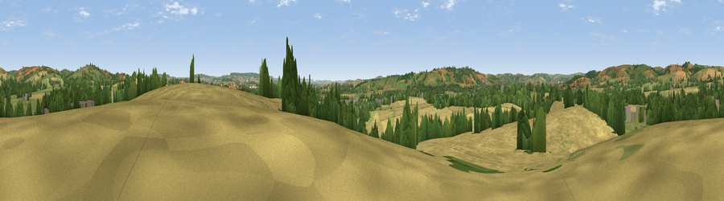

Viewpoint near Halberton
#21172 in England · top 38% of its area beats it · near HalbertonWhere it is
The exact computed spot (ST 00425 13875). Click the marker for map links.
The view, rendered

A 360° render of this exact spot computed from the terrain model, tree cover and land cover — summer colours, afternoon light, calibrated against photographs of famous viewpoints. Real trees, hedges and buildings will differ in detail.
The panorama
Grey silhouette: terrain skyline in each direction (720 bearings, Earth curvature and refraction included). Dashed green: skyline with trees (+15 m) and buildings (+8 m) as obstacles. Blue strip: how far the ground is visible on each bearing.
Where the view opens
Wedge length = distance to the farthest visible ground on that bearing (vegetation-aware). Rings at 10, 25 and 50 km.
What fills the view
45% cropland · 37% grassland · 16% woodland · 2% built-up
Angular shares of the visible panorama (visual magnitude), not map area. Landscape diversity 0.47 (0–1 Shannon).
Key numbers
More beautiful places nearby
The staircase of upgrades: each row has a higher view potential than everything closer. Driving times are estimates from straight-line distance, calibrated against real road routing — check an actual route before setting out.
| Place | Direction | Drive | Score |
|---|---|---|---|
| Viewpoint near Sampford Peverell | ENE · 3 km | ~6 min | 51.9 |
| Viewpoint near Uplowman | NE · 3 km | ~8 min | 58.7 |
| Barton Hill | NW · 4 km | ~9 min | 66.1 |
| Viewpoint near Chevithorne | WNW · 4 km | ~9 min | 66.2 |
| Viewpoint near Cadeleigh | WSW · 8 km | ~16 min | 66.7 |
| Viewpoint near Butterleigh | SSW · 9 km | ~17 min | 68.1 |
| Viewpoint near Silverton | SSW · 10 km | ~19 min | 73.9 |
| Viewpoint near Bradninch | SSW · 10 km | ~19 min | 77.7 |
50.91572, -3.41786 · source: screening · position refined by local search. Computed location — check access rights before visiting.